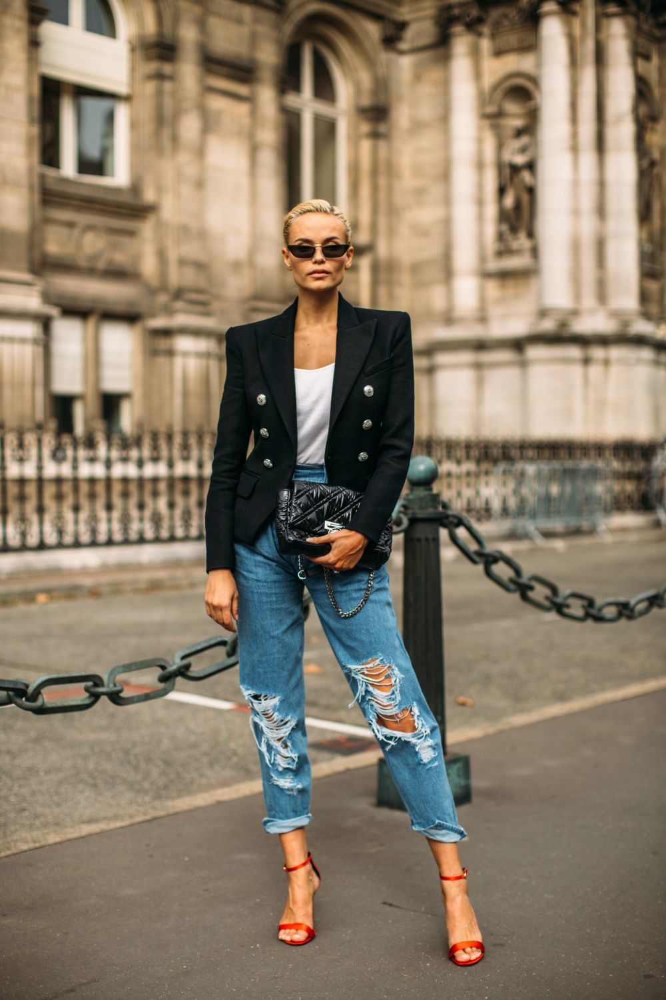
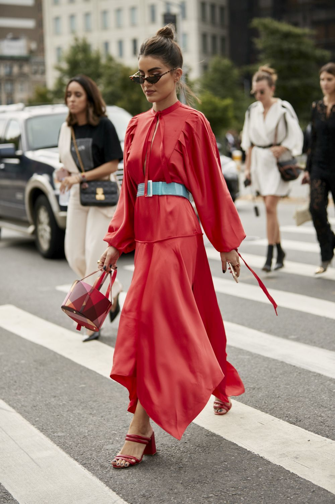

La moda urbana es un concepto que se ha puesto de moda en los últimos años y que está causando furor
entre los amantes de las tendencias. Y ¿en qué consiste? Pues muy sencillo. Es un estilo que se centra
en fotografiar la moda de la calle, la que lleva la gente común, fuera de las pasarelas.
Street Style es un término usado para describir la manera de vestir que se considera no surgida de los
estudios. El Estilo de Calle, Street Style, se asocia generalmente con la cultura juvenil, y es más
frecuente en los grandes centros urbanos.
Los Street Looks se han convertido en el mejor escaparate para conocer las tendencias más in del
momento. Yendo al trabajo, a llevar a los niños al cole, a tomar unas cañas con amigos o a pasear al
perro. Los looks elegidos para los momentos más cotidianos de la vida de las personas influyentes y
famosas del mundo, son sin duda, el punto de partida de este joven concepto en moda.
Los vestidos. Sus posibilidades son infinitas y no se nos ocurre una prenda que mejor combine con la
palabra verano. Te damos varias opciones, en versión low cost, para pasar con
mucho estilo los días más calurosos.
No vale cualquiera, elegimos los best sellers de la
temporada. Esos que han agotado existencias en las tiendas y se han convertido en objeto de deseo entre
las que más saben que moda.
JUEGA CON LOS CONTRASTES
He aquí una de esas normas no escritas, y recurrentes, en cuestiones de estilismo. Para ilustrarla nos valdremos de dos opuestos. Una serie de piezas básicas -el trío blazer, camiseta blanca y bolso clásico- y una de las tendencias más arriesgadas de la temporada, los jeans desgarrados. Apostar por los vaqueros rotos será una forma de rejuvenecer tu outfit.
Para las prendas más originales, 'keep it basic'
El efecto contrario, si cuentas con un jersey llamativo, como este de formas multicolores, no sobrecargues el look y opta por piezas lisas y en un mismo tono.
Superposiciones y zapatos anudados
El verano pasado, las influencers nórdicas comenzaron a anudar sus sandalias de tiras por encima de los pantalones y este pequeño tip se ha repetido hasta día de hoy empleándolo en tacones cerrados. De esta manera logra cambiarse la silueta del pantalón, estilizar la silueta al marcar los tobillos en los pantalones más fluidos y evitar roces por las tiras del calzado. Asimismo, esta fashionista apuesta también por superponer un cropped top sobre una camisa, un sencillo gesto que crea un look más complejo y actual.
PON EL FOCO EN LA CINTURA
La prenda: un vestido fluido y monocolor; el accesorio que lo cambia todo: un cinturón ancho en un tono contrastado. El mix cromático aporta dinamismo al look y el hecho de enmarcar el talle ayuda a armonizar visualmente la silueta.
Mezcla de estilos
Una americana y un vestido de satén son una combinación ideal para las jornadas laborales y, aunque su carácter formal parezca pedir a gritos unos salones, funcionan igual de bien con unas botas de estética militar.
ATA TU PAÑUELO
A modo de coletero, al cuello o adornando el asa del bolso. Un pañuelo de seda estampado puede hacer maravillas sobre aquello que lleves puesto. Tanto la pasarela como el street style se han dejado seducir por este complemento a sabiendas de su potencial para transformar cualquier outfit.